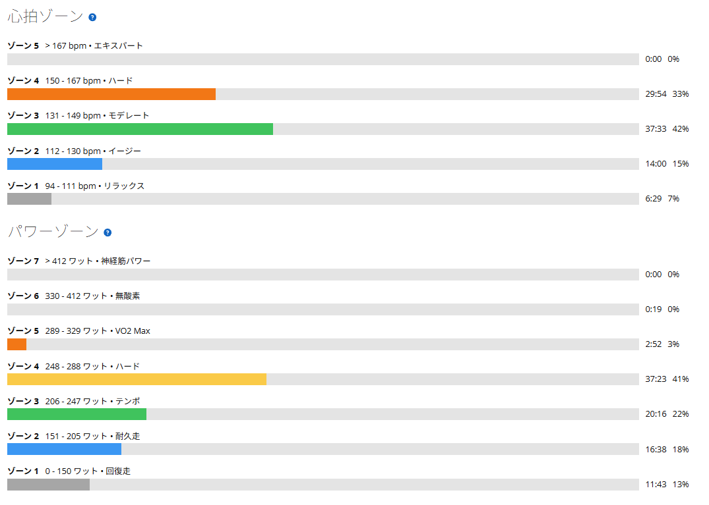
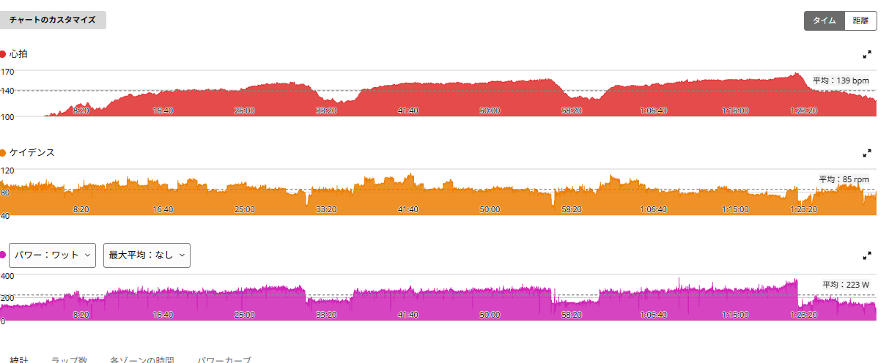

SST20分×3。252・253・260Wで、最後が一番高かった
今日はローラーでSST20分×3。少し前なら「20分を3本か……」と始める前から嫌になるメニューだったのだが、最近は少し感覚が変わってきた。
もちろん楽になったわけではない。普通にキツい。ただ、「これ、最後までいけるか？」というキツさから、「キツい。でもたぶん最後までいける」くらいにはなってきた。地味だが、この違いは結構大きい気がする。

1時間29分・NP237W・TSS109.7
- 全体1時間29分15秒 / 平均223W / NP237W / IF0.861 / TSS109.7
- 心拍・回転平均139bpm / 最大167bpm / 平均85rpm
- メニューSST20分×3 / レスト5分 / FTP設定275W
ゾーンで見ると、パワーはゾーン4に37分23秒、ゾーン3に20分16秒。心拍はゾーン3〜4に67分入っていて、ゾーン5はゼロ。真ん中を長く踏み続ける、いつものSSTの形である。
252W → 253W → 260W。最後が一番高かった
- 1本目252W（FTP比91.6%）/ 心拍平均140bpm・最大152bpm
- 2本目253W（FTP比92.0%）/ 心拍平均149bpm・最大157bpm
- 3本目260W（FTP比94.5%）/ 心拍平均152bpm・最大167bpm
3本とも完遂。しかも最後の3本目が一番高く、260Wまで上がった。相変わらずキツいし、3本目の最後には心拍も167bpmまで行っている。それでもパワーは落ちなかった。むしろ最後に上がっている。

過去の20分×3と並べる
- 8月18日244W → 240W → 246W
- 8月30日255W → 254W → 256W（3本目10分でやめようかと思った日）
- 9月7日250W → 247W → 252W
- 今日252W → 253W → 260W（3本平均 約255W）
9月7日よりは全体的に上。3本目の260Wは、20分×3の3本目としてはこれまでで一番高い。
ただし正直に書くと、3本の平均で見ると約255Wで、8月30日とほぼ同じである。「過去最高の20分×3」と言えるほどの差ではない。違うのは中身で、あの日は3本目の途中でやめたくなるほどギリギリだった。今日は同じくらいの出力を、最後に上げて終われた。
9月7日の宿題に、一応答えられた
9月7日の記事では、AIに「次は255Wで3本。同じ出力で息が楽なら、それは本物です」と言われていた。今日の3本平均は約255W。宿題の出力には届いた。
同じメニューの9月7日と心拍を比べると、こうなる。
- 1本目9月7日 250W・144bpm → 今日 252W・140bpm
- 2本目9月7日 247W・148bpm → 今日 253W・149bpm
- 3本目9月7日 252W・152bpm → 今日 260W・152bpm
1本目は2W高くて心拍が4bpm低い。3本目は8W高くて平均心拍は同じ。心拍ゾーンの配分も、9月7日（Z4 29分02秒・Z3 37分16秒）と今日（Z4 29分54秒・Z3 37分33秒）でほぼ同じだった。同じくらいの心拍で、出力だけ少し上に乗っている。
ただ、宿題にはもう一つ「室温もメモ」があった。これは今回も記録していない。なので「本物」と言い切るのは、まだ早い。
次の課題は5分走
そして今、自分の中では次に伸ばしたいところがかなりハッキリしている。5分走である。
最近ローラーでやっている315W×5分×4本。先日は313W、315W、309Wと3本まではこなしたものの、4本目は302Wで3分ほどで終了。久しぶりにえづくくらい追い込まれた。SSTはキツくても粘れる。でも315W付近になると、まだ最後まで揃えられない。今の自分の弱いところが分かりやすく出ている。
SSTは継続、5分走を伸ばしていく
富士ヒルゴールドを目指すうえで、もちろんSSTをやめるわけではない。250W前後を長時間維持する力は引き続き伸ばしていく。ただ、SST20分×3をある程度安定して完遂できるようになってきた今、次に攻略したいのは5分走。
当面は、SSTや長時間一定走で土台を作りながら、315Wの5分走×4本を完遂できるようにする。ここを一つの目標にする。少し前までSST20分×3も十分嫌なメニューだったので、5分走も繰り返していれば、そのうち「キツいけど4本ならいける」くらいになる……はず。
たぶん。ならなかったら、またAIと喧嘩する。
次に見るポイント
- 室温次のローラーでは必ず記録する。9月7日からの宿題がまだ残っている
- SSTの再現性3本平均255W前後を、次も最後に上げて終われるか
- 5分走の4本目315Wで3分01秒だった4本目を、どこまで伸ばせるか